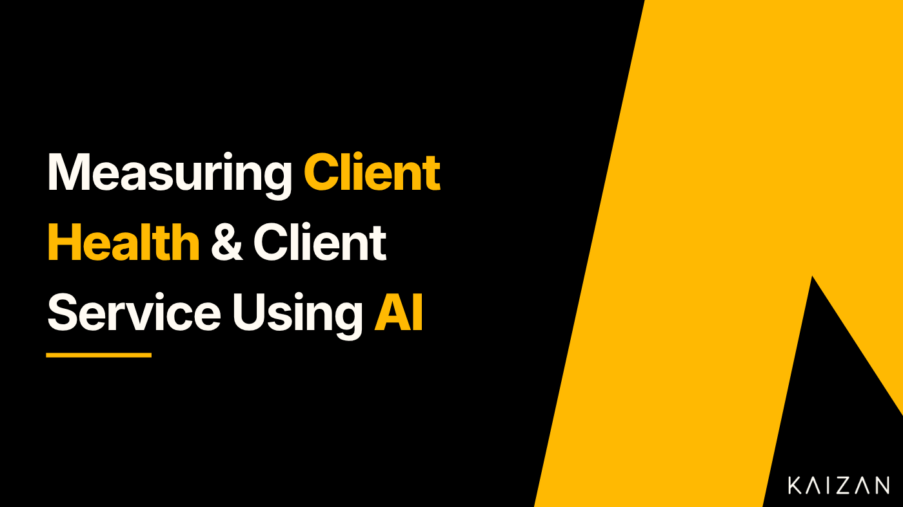

Measuring Client Health & Client Service Using AI

In this article, we’ll explore how businesses can use AI to measure client service levels and the leading indicators that affect client health. First, let’s understand why this is essential.
Why is it important to measure Client Health?
Monitoring client health can act as an early warning system for potential issues or challenges which may impact the relationship with a client. By leveraging data or using indicators of dissatisfaction or disengagement, businesses can proactively address any problems and prevent them from escalating into a more complex issue.
Measuring client service levels on an ongoing basis allows a business to gauge how satisfied its clients are with the products or services they receive. Satisfied clients are more likely to become repeat buyers and advocates for the business, leading to increased client loyalty and positive word-of-mouth referrals. This is important for any business, as acquiring a new client has been estimated at anywhere between five and 25 times as costly as retaining an existing one.
There are a number of processes and technologies that businesses can use to measure client health effectively, these include:
CRM (Customer Relationship Management) Software
Client Feedback Management Systems
SaaS usage Metrics and Analytics
AI (Artificial Intelligence) tools designed for Client Service Teams
Client Health Check-ins
NPS Surveys
A business may choose to focus on applying one or two of these whilst working with its clients or apply a combination of these. Either way, they will help to build a picture of client health and identify particular clients which require some additional focus.
Let’s explore AI (Artificial Intelligence) in more detail to understand how it can be leveraged whilst working with clients.
What is AI?
Artificial Intelligence (AI) is a cutting-edge field of computer science that focuses on creating intelligent machines capable of mimicking human-like cognitive processes. The primary goal of AI is to enable machines to perceive, learn, reason, and act in ways that imitate human intelligence. Through advanced algorithms and sophisticated models, AI systems can process vast amounts of data, recognise patterns, make decisions, and continuously improve their performance over time. AI has significantly impacted the business world across various industries. Its applications have grown rapidly, revolutionising how businesses operate and make decisions.
Generative AI is a category of artificial intelligence that can not only analyse existing data or make decisions based on past data but also create new and original data. It involves building models that can generate content such as text, images, videos, music, or other types of media based on inputs (prompts) from the user.
Generative AI has been increasingly applied in various aspects of working with clients across different industries. Its ability to analyse vast amounts of data, recognise patterns, and make informed decisions quickly has made it a valuable tool for enhancing client experience and optimising service delivery.
How can AI be used to measure Client Service Levels and Client Health?
Generative AI offers a number of techniques that businesses can use to measure client service levels and leading indicators of client health; lets look at these in more detail:
Client Satisfaction Analysis: AI can analyse various factors contributing to client satisfaction, including response times, issue resolution rates, and client feedback, to measure service levels and take corrective actions if needed.
Sentiment Analysis: Sentiment analysis is a natural language processing (NLP) technique that analyses client feedback, reviews, and interactions to determine the sentiment (positive, negative, neutral) of clients. This helps to gauge overall client satisfaction and identify areas that need improvement.
Client Churn Prediction: AI can predict the likelihood of a client churning or discontinuing their services based on historical data, usage patterns, and client behaviour. These data points act as leading indicators of client churn which enables businesses’ to create proactive retention strategies to retain clients before they churn.
Client Segmentation: AI can segment clients based on various attributes such as usage patterns, demographics, preferences, and behaviour. This helps in tailoring services to specific client segments and addressing their unique needs.
Image and Video Analysis: For digital communications with clients AI can analyse facial expressions and images in videos to capture client emotions and sentiment. These data points can be useful in measuring client sentiment and overall client satisfaction.
Speech Analytics: AI-powered speech analytics can useful in evaluating client calls with client service managers to assess performance, identify client pain points, and improve communication with clients.
Virtual Assistants and Chatbots: Implementing AI-driven virtual assistants and chatbots can enhance client service levels by providing quick and accurate responses to common queries, improving response times, and freeing up the team for more complex tasks.
Topic Analysis: Summarisation of what clients are interested in or open to is a great leading indicator to trends and what you can do match the needs of your clients.
Which Client Health Metrics should I track?
Measuring client health metrics is crucial for businesses to assess the overall satisfaction and success of their clients. These metrics provide valuable insights into the relationship between the business and its clients, helping identify areas of improvement and potential risks. While the specific metrics to measure may vary depending on the nature of the business and its products or services, here are some essential client health metrics that businesses should consider:
Client Engagement — Frequency of contact between the client service team and client team.
Tracker Phrases — Positive, negative or risk phrases that are flagged when they are mentioned by the client team.
Sentiment — Overall sentiment captured by analysing positive, negative or neutral language from calls and email communication.
Decision Maker Sentiment— Positive, negative or neutral language of the key decision maker captured on calls and email communication.
Decision Maker Coverage — The frequency of contact between client service team and client decision maker.
CSM Response Time — The average response time between client service team and client.
Stakeholder Coverage — The frequency of contact between client service team and key stakeholders.
Time on Client — The average time spent on each client per week.
RAG Status — Traffic light system to illustrate the overall health of each client. Red, Amber or Green status is determined by the factors which impact client health. These factors include client engagement, sentiment, engagement with decision makers and stakeholder coverage.
These metrics that can be captured by client engagement tools such as Kaizan. It’s essential to integrate these AI tools effectively with your client relationship management (CRM) system or other relevant data sources to ensure accurate and real-time data analysis, which can lead to actionable insights and informed decision-making in client success and client development.
Another framework that can be used to capture client health metrics when working with multiple decision-makers and key stakeholders is the MEDDIC framework. By leveraging the MEDDIC framework, a client success team can:
Effectively prioritise clients based on their strategic importance and potential for expansion.
Identify at-risk clients early on and proactively address their concerns to prevent churn.
Tailor their approach to meet the unique needs and goals of each client.
Demonstrate the value and ROI of their product or service to key stakeholders.
Align the client success strategy with the client’s business objectives for long-term success.
The definition of the MEDDIC acronym is:
Metrics: Understanding the specific metrics and key performance indicators (KPIs) that matter to the clients’s business. This involves learning about their goals, objectives, and the quantitative measures they use to assess success.
Economic Buyer: Identifying and engaging with the stakeholder or key influencer who holds the budget authority and final decision-making power within the client’s organisation.
Decision Criteria: Understanding the criteria that the client uses to evaluate potential solutions or vendors. This involves knowing what features, benefits, and capabilities are essential to the client’s needs.
Decision Process: Understanding the step-by-step process the client follows when making purchasing decisions, including the stakeholders involved and potential roadblocks that could arise.
Identify Pain: Discovering the specific challenges, pain points, or problems the client is facing that your product or service can solve effectively.
Champion: Finding an internal champion within the client’s organisation who supports your solution and is willing to advocate for your product or service to other stakeholders.
Final Thoughts
By integrating AI into the measurement of client health and client service, businesses can gain valuable insights that lead to data-driven decisions and targeted actions to improve client satisfaction, loyalty, and retention.
However, it’s essential to ensure the accuracy and ethical use of AI tools, to regularly review and update AI models and strategies based the latest developments and to follow data privacy and security considerations in order to protect client information and maintain trust.
AI-driven insights should always be combined with human expertise to provide exceptional client service and to create a successful partnership between a business and its clients.